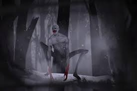
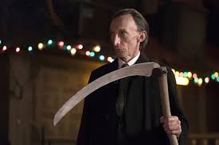
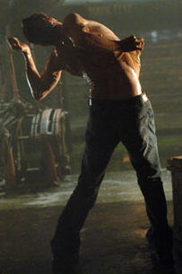
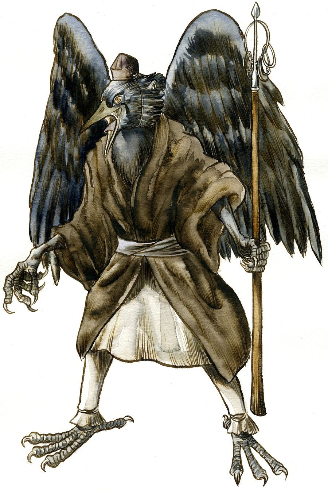
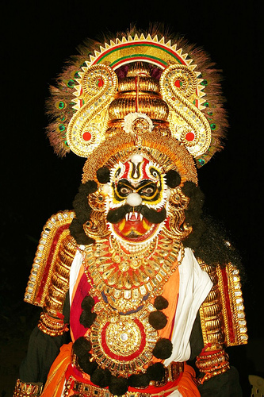
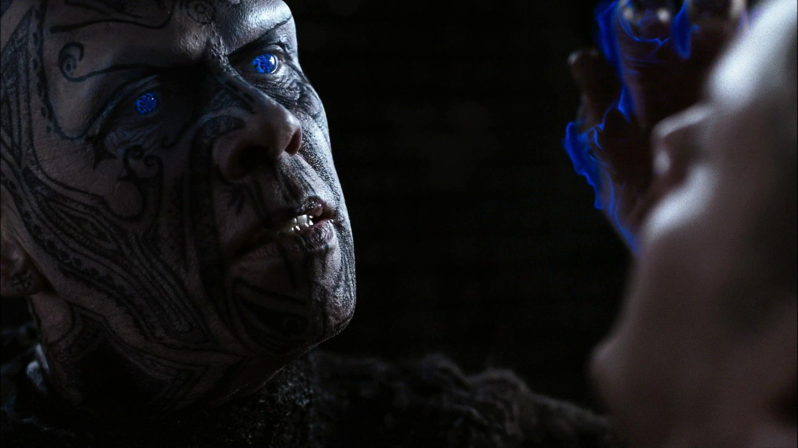

WENDIGO |
CEIFADOR |
METAMORFO |
|

Wendigos foram uma vez seres humanos , mas depois de ser forçado a comer carne humana para sobreviver, eles se tornam monstros sobrenaturais que mantêm pequenos recursos humanos, uma vez que eles possuíam. Depois de sua transformação, eles começam a almejar carne humana e alimentos para animais apenas sobre ele. |

Ceifeiros são filhos da morte. Eles ajudam na manutenção da ordem natural, e são completamente neutros, não estando aliados ao céu ou ao inferno. De acordo com Castiel (persnagem da série) , Ceifeiros, às vezes, aparecem em manifestações em massa no prelúdio de um desastre tão grande como a erupção do Monte Vesúvio, em Pompéia. |

Metamorfos são uma raça de criaturas sobrenaturais que podem assumir a forma de qualquer outra pessoa. |
TENGU |
RAXASA |
DJINN |
|

Esse é demonio das montanhas japonesas é conhecido por enganar viajantes e por possuir arrogantes e orgulhosos, os quais o tengu pode enlouquecer ou até mesmo matar. Eles se apossam de corpos de mulheres na tentiva de seduzir homens. |

Nasceram de um mito hindu, no qual são narrados como demônios do caos. Eles atrapalham rituais de sacrifício, desonram túmulos, comem pessoas e podem mudar de forma assumindo forma humana ou de uma grande ave, sem falar do poder de invisibilidade e reanimar mortos. |

Os Djinns não concedam verdadeiros desejos, em vez disso eles envenenam suas vítimas e cria uma realidade alternativa. A vítima é presa dentro dessa ''realidade'' e acaba acreditando que a alucinação é o seu sonho em realidade. Ao mesmo tempo, sem que a vítima perceba, o djinn se alimenta do sangue. |